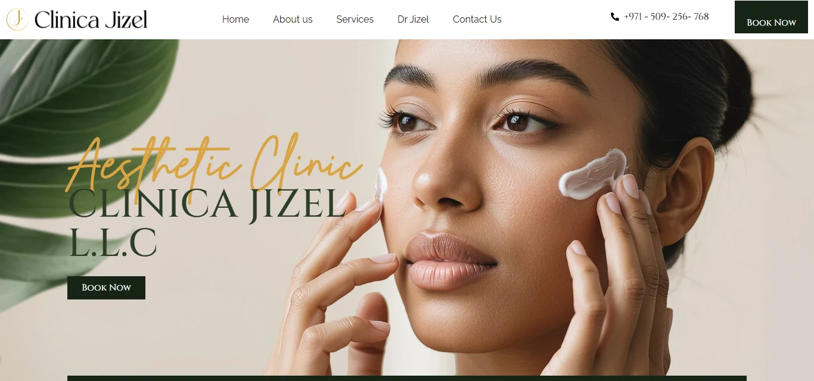
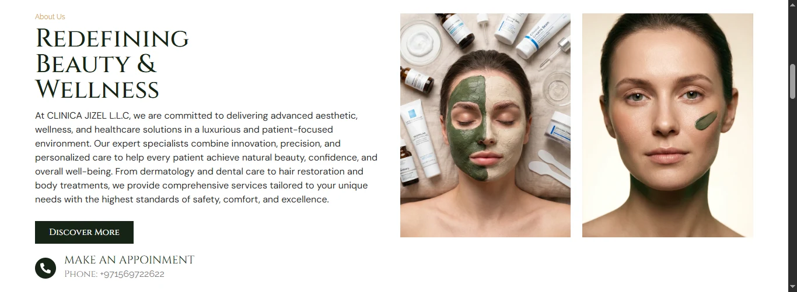
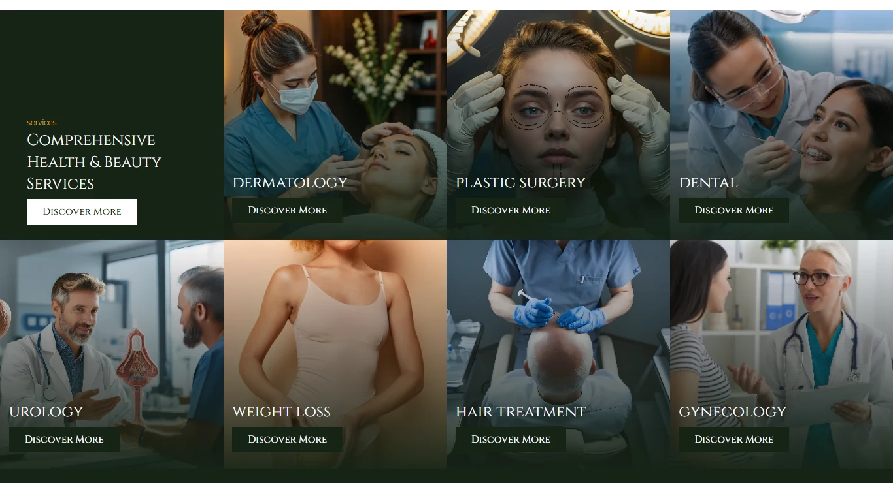
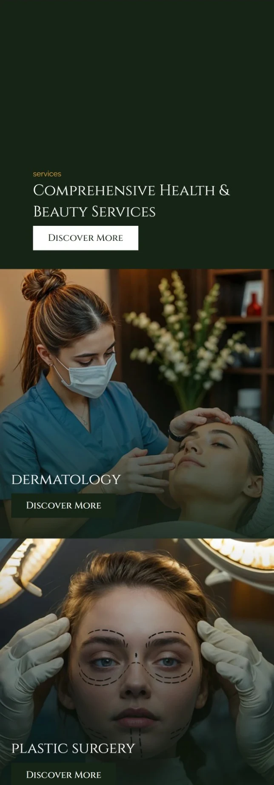
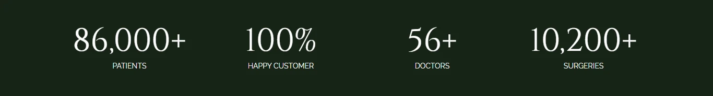

سبع تخصصات، عيادة واحدة لازم تحس فيها إنك في مكان فاخر.
Clinica Jizel بتشغّل الجلدية، الجراحة التجميلية، الأسنان، المسالك البولية، إنقاص الوزن، علاج الشعر، وأمراض النسا — مدى أوسع بكتير من عيادة التجميل العادية، وطريقة سهلة إنك تخرج بشكل دليل عام متعدد الأقسام بدل ممارسة واحدة فاخرة.
البريف كان نحافظ على كل تخصص سهل الوصول بنفس القدر، من غير ما نفقد الحس البوتيك والإديتوريال اللي البراند والصور الأصلية للعيادة كانت فيها من الأساس.
نسيب الصور هي اللي تبني الثقة، مش الأيقونات أو الكلام.
مع سبع خدمات بتتنافس على الانتباه، أسرع طريقة كانت تحولهم لدليل مسطح هي كارتات أيقونات وليبلات قصيرة. بدل ده، كل تخصص أخد صورة كلينيكية حقيقية كاملة — العلاج نفسه هو العرض — مع معلومات عملية (الموقع، المواعيد، التليفون) موضوعة قبل أي كلام تسويقي، للزوار اللي أصلًا قرروا إنهم عايزين يحجزوا.
الصورة الأول
سبع تخصصات، سبع صور حقيقية — من غير أي سيت أيقونات يقف بدل الشغل نفسه.
معلومة عملية، بسرعة
التواصل، الموقع، والمواعيد تحت الهيرو على طول، قبل أي سطر تسويق.
ثقة على خطوتين
شريط أرقام جامد (مرضى، دكاترة، عمليات) متبوع بـ"ليه تختارنا" مرقّم — إثبات، وبعده تبرير.
لون أخضر غامق وذهبي، بيتقرا كصفحة مجلة تجميل، مش عيادة.
الهوية متكئة على أخضر غابة قريب من الأسود مع لون ذهبي واحد بارز، مع خط سيريف ديسبلاي للعناوين فوق خط sans بسيط للمتن — نفس التناقض اللي بتستخدمه صفحات مجلات التجميل، بدل الباليتة الأفتح والأكتر كلينيكية اللي أغلب العيادات التانية بتستخدمها.

الباليتة فضلت مقصودة وضيقة — خلفية غامقة واحدة، لون بارز دافي واحد، ولون نيوترال داعم واحد — عشان سبع تخصصات مختلفة جدًا تقدر تتشارك فيها من غير ما أي واحدة منهم تحتاج قصة ألوان خاصة بيها.
عنوان إنجليزي
Playfair Display
متن إنجليزي
Poppins
الجريد على الديسكتوب بيتحول لسكرول full-bleed على الموبايل.
على الديسكتوب، السبع تخصصات متجمعة في جريد كثيف من أربع columns جنب كارت تعريفي، بشكل تقدر تمسحه بنظرة واحدة. على الموبايل، نفس الجريد بيتفتح لكولمن واحد من كارتات صور full-bleed، واحد بعد التاني — كل علاج بياخد عرض الشاشة كله بدل ما يتقزّم في خلية جريد صغيرة مش كفاية لصورة حقيقية تتقرا كويس.


اتبنى بمفردي، بووردبريس وإليمنتور برو.
صممت وبنيت ده من أول لآخر. كارت الخدمة، بلاطة الإحصائية، وصف "ليه تختارنا" المرقّم، كل واحد منهم سكشن إليمنتور محفوظ، فنفس بنية السبع تخصصات دي قابلة لإعادة الاستخدام لأي عيادة جديدة ليها انتشار مشابه متعدد الأقسام — تكرر الصف، تبدّل الصورة والليبل.

شوية قرارات طلعت إديتوريال، مش جينيريك.
وأنا باراجعه بنظرة UX، تلات قرارات شغالة أكتر من شكلها:
المعلومة قبل النية
التواصل، الموقع، والمواعيد في شريط لوحدهم تحت صورة الهيرو على طول، قبل أي عرض — زائر أصلًا ناوي يحجز بياخد اللي محتاجه من غير ما يعدي على كلام تسويقي الأول.
مفيش أيقونات، صور بس
السبع تخصصات كلهم بيستخدموا صورة كلينيكية full-bleed مع تدرج overlay، مش كارت أيقونة أبدًا — ده متماشي مع عيادة فاخرة قائمة على الجمال، فين الجودة البصرية للشغل هي الإثبات نفسه.
علامة مائية، مش خط فاصل
خط "Why Choose Us" الكبير والخفيف قاعد خلف السكشن كـ texture خلفية بدل خط أو أيقونة — بيعلّم السكشن بصريًا وفي نفس الوقت يسيب القايمة المرقمة كل المساحة عشان تتنفس.
شغلانة الصفحة الرئيسية إنها تكسب الضغطة، مش تحمل القصة كلها.
كل واحد من السبع كارتات تخصص بيودي لصفحة "Discover More" خاصة بيه، وده مقصود هو المكان اللي التفاصيل الخاصة بكل إجراء، شغل قبل/بعد، والأسئلة الشائعة لازم تكون فيه — عشان الصفحة الرئيسية تفضل سريعة المسح لحد لسه ما قررش أي تخصص محتاجه.
سبع تخصصات، بتتقرا كمكان واحد.
الزائر يقدر ينزل على أي واحد من السبع تخصصات ويلاقي نفس الباليتة، نفس شكل الكارت، ونفس طريقتين للتصرف — يحجز دلوقتي أو يتصل — مع موقع العيادة ومواعيدها الحقيقية مش أبعد من نظرة.